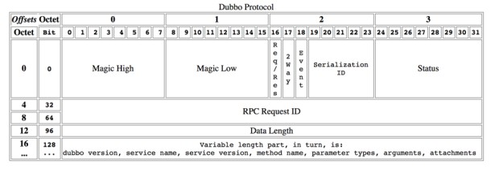

Implementation details
Initialization details
Service parsing
Based on META-INF/spring.handlers config in dubbo.jar, Spring calls DubboNamespaceHandler when meeting dubbo namespace.
All Dubbo tags are parsed by DubboBeanDefinitionParser, based on one to one attribute mapping, the XML label is parsed as a Bean object.
Transfer Bean object to URL, and transfer all attributes of Bean to URL parameters when ServiceConfig.export() or ReferenceConfig.get() initialization.
Then pase URL to Protocol extension point, based on Extension point adaptive mechanism of extension point, processing service exposure or reference for different protocols according to URL protocol header.
Service Exposure
1. Only expose service port:
Direct exposing to provider when have not Registry, [^1], the URL format which parsing by ServiceConfig:
dubbo://service-host/com.foo.FooService?version=1.0.0.
Based on extension point adaptive mechanism, call export() method of DubboProtocol and open server port by identifying dubbo:// protocol header of URL.
2. Expose to Registry:
Expose provider address to Registry [^2], the URL format which parsing by ServiceConfig: registry://registry-host/org.apache.dubbo.registry.RegistryService?export=URL.encode("dubbo://service-host/com.foo.FooService?version=1.0.0")，
Based on extension point adaptive mechanism, call export() method of RegistryProtocol by identifying registry:// protocol header, register the provider URL parameter of export to Registry.
Resend to Protocol extension point to do exposure: dubbo://service-host/com.foo.FooService?version=1.0.0, then based on extension point adaptive mechanism, call export() method of DubboProtocol and open server port by identifying dubbo:// protocol header of provider URL.
Service Reference
1. Direct connect service
Direct connect provider when have not Registry [^3], the URL format which parsing by ReferenceConfig: dubbo://service-host/com.foo.FooService?version=1.0.0.
Based on extension point adaptive mechanism, call refer() method of DubboProtocol by identifying dubbo:// protocol header of URL, and return provider reference.
2. Service Registry discovery
Discover provider address by Registry [^4], the URL format which parsing by ReferenceConfig:
registry://registry-host/org.apache.dubbo.registry.RegistryService?refer=URL.encode("consumer://consumer-host/com.foo.FooService?version=1.0.0").
Based on extension point adaptive mechanism, call refer() method of RegistryProtocol by identifying registry:// protocol header of URL, then based on the condition of parameter of refer to search provider URL, for example: dubbo://service-host/com.foo.FooService?version=1.0.0.
Then based on extension point adaptive mechanism, call refer() method of DubboProtocol to get provider reference by identifying dubbo:// protocol header of provider URL.
Then RegistryProtocol disguise various provider references to single provider by Cluster extension point and return.
Service Filter
Based on extension point adaptive mechanism, all Protocol extension points are auto wrapped Wrapper class.
Based on ProtocolFilterWrapper class, make all Filter as chain, call the real reference at the end of the chain.
Based on ProtocolListenerWrapper class, make all InvokerListener and ExporterListener as list, perform call back before and after exposure and reference.
All additional functions would be implementated by Filter, including Monitor.
RPC details
The detail process of exposing service by service provider

The above image shows the main process of exposing service by service provider:
First ServiceConfig class get the actual class ref that provides service(e.g. 如：HelloWorldImpl), then generating a AbstractProxyInvoker instance by the getInvoker method of ProxyFactory class, to this step, complete the transformation of specific service to Invoker, next is the process of converting Invoker to Exporter.
The key of Dubbo processing service exposure is the process of converting Invoker to Exporter, the red part in the above image. Here we introduce the implementation of the two typical protocols, Dubbo and RMI:
Dubbo implementation
The transformation from Invoker of Dubbo protocol to Exporter takes place in the export method of DubboProtocol class, it mainly opens the socket to listen service and receive all kinds of requests sent by the client, and the communication details are implementated by Dubbo itself.
RMI implementation
The transformation from Invoker of RMI protocol to Exporter takes place in the export method of RmiProtocol class, the RMI service is implementated by Spring, Dubbo or JDK, and the communication details are implementated by JDK, which saves a lot of work.
The detail process of serving service for service consumer

The above image is the main process of service consumption:
First, the init method of ReferenceConfig class calls the refer method of Protocol to generate Invoker instance(such as the red part in the above image), which is the key of service consumption. Then the Invoker is converted to the interface required by the client (such as: HelloWorld).
For each protocol such as RMI/Dubbo/Web service, the details they call refer method generate Invoker instance are similar to the previous section.
Invoker everywhere
Because of Invoker is a very important concept in the Dubbo domain model, many of the design ideas are close to it. This makes Invoker permeate the entire implementation code, and it's really easy to mix up for people who have just started Dubbo.
Let's use a simple image below to describe the 2 important Invoker: service provider Invoker and service consumer Invoker:

To better explain the above image, we provide the below code examples of service consumption and providers:
Service consumer code:
public class DemoClientAction {
private DemoService demoService;
public void setDemoService(DemoService demoService) {
this.demoService = demoService;
}
public void start() {
String hello = demoService.sayHello("world");
}
}
The DemoService in above code is the proxy of service consumer in above image, user can call Invoker [^5] which implementate the real RPC by the proxy.
Service provider code:
public class DemoServiceImpl implements DemoService {
public String sayHello(String name) throws RemoteException {
return "Hello " + name;
}
}
The above class would be encapsulated to be a AbstractProxyInvoker instance, and create a new Exporter instance, then find corresponding Exporter instance and call its corresponding AbstractProxyInvoker instance when network communication layer recieve request, so that real call service provider code. There are some other Invoker classes, but the above 2 are the most important.
Remote communication details
Protocol header agreement

Thread dispatch model

- Dispather:
all,direct,message,execution,connection - ThreadPool:
fixed,cached
[^1]: is <dubbo:service regisrty="N/A" /> or <dubbo:registry address="N/A" />
[^2]: is <dubbo:registry address="zookeeper://10.20.153.10:2181" />
[^3]: is <dubbo:reference url="dubbo://service-host/com.foo.FooService?version=1.0.0" />
[^4]: is <dubbo:registry address="zookeeper://10.20.153.10:2181" />
[^5]: is one of DubboInvoker, HessianRpcInvoker, InjvmInvoker, RmiInvoker, WebServiceInvoker